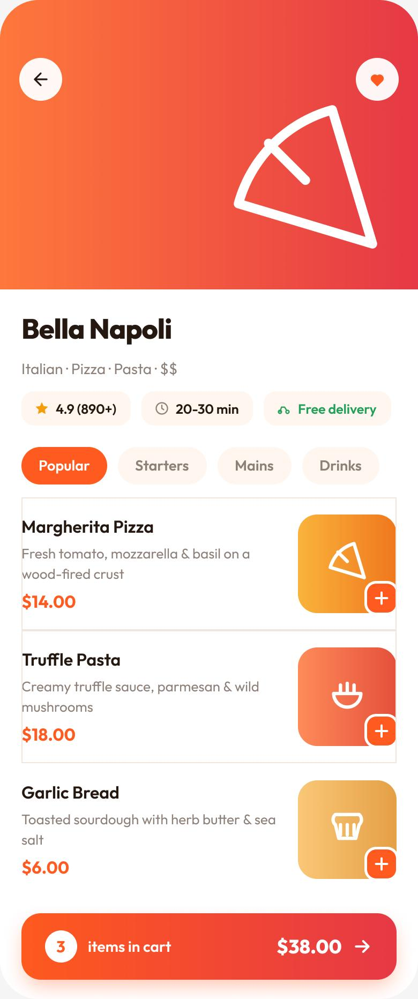

The Problem
Food apps overwhelm you at the exact moment you're least patient — hungry and indecisive. Cluttered menus, delivery times and fees buried until checkout, and too many choices turn a quick craving into decision paralysis.
How might we help hungry, indecisive users decide what to order and check out quickly — without menu overload?
Goals & Success Metrics
- ◎Browse by cravingCuisine categories & clear cards that help people decide fast.
- ✓Honest info up frontDelivery time, fee and rating on every restaurant card.
- 🛒Frictionless cartOne-tap add and a cart that's always one tap away.
Target metrics: restaurant decision time ↓ · add-to-cart success > 90% · SUS > 80 · delivery-fee clarity ↑.
User Research
Key findings
- 1Time & fee decide everythingDelivery ETA and fee are top factors — but most apps hide them until checkout.
- 2People crave-browse by cuisine“I want burgers / something healthy” — category entry points beat search.
- 3Photos + quick-add reduce frictionA visible photo and a one-tap “＋” keep the flow moving.
- 4Cart re-navigation frustratesLosing the cart while browsing more items is a top annoyance.
Personas
Karan Malhotra
"I'm starving and can't decide. Just show me what's fast, cheap to deliver, and good."
- Order quickly with minimal thinking
- Know the ETA & fee before tapping in
- Endless menus & too many choices
- Delivery fee revealed only at checkout
Divya Pillai
"I'm adding a few things for everyone — I need the cart to keep up without me losing my place."
- Build a multi-item order smoothly
- See value & total clearly
- Cart resets / hard to find
- Unclear totals & surprise charges
User Flow — Craving to Checkout
Wireframes
Low-fi placed delivery info on cards and kept the cart persistent so multi-item orders never lose their place.
Hi-Fi Design & Prototype
A warm, appetising home with cuisine chips and restaurant cards that show rating, ETA and fee up front — plus a restaurant page with one-tap add and a persistent cart bar that follows the order.


Key design decisions
- ◆Info-rich restaurant cardsRating · ETA · delivery fee visible before you commit — no checkout surprises.
- ◆Cuisine chipsCraving-first browsing that matches how hungry people actually choose.
- ◆Persistent cart barOne-tap add and a running total that stays put while you browse more.
Usability Testing
6 participants, moderated + unmoderated task sessions.
Tasks: (1) “Find a well-rated place with free delivery.” (2) “Add two dishes and open your cart.”
| Metric | Target | Result |
|---|---|---|
| Restaurant decision time | ↓ vs. baseline | −40% |
| Add-to-cart success | > 90% | 95% |
| System Usability Scale | > 80 | 87 |
| Delivery-fee clarity (1–5) | ↑ | 4.7 |
What testing changed
Users compared fees by opening each restaurant. → Put ETA + delivery fee directly on the card so comparison happens in the list.
Adding a second item felt like starting over. → Introduced a floating cart bar with live count & total that persists across the menu.
Results & Impact
Reflection & Next Steps
Designing for a low-patience, high-emotion moment reframed everything: reduce choices, put the deciding info (time & fee) where the decision happens, and never let the cart get in the way. Transparency again beat cleverness.
Next: smart “re-order” & favourites, group ordering for families like Divya's, and dietary filters (veg / vegan / allergens).